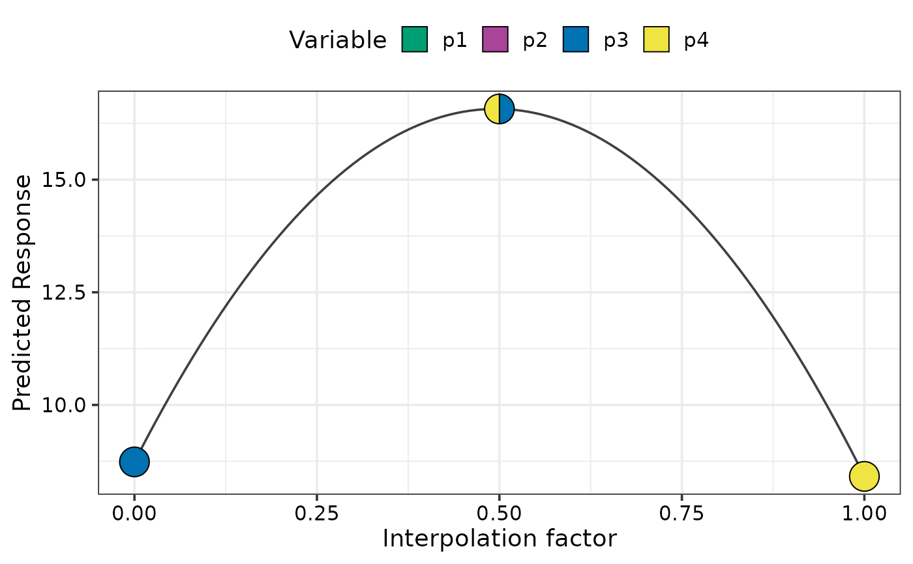
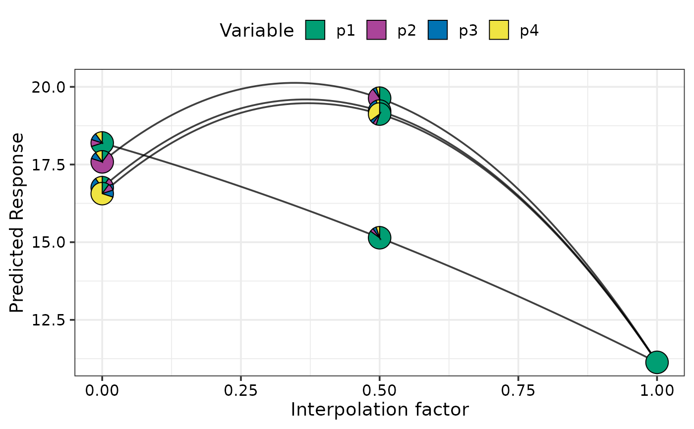
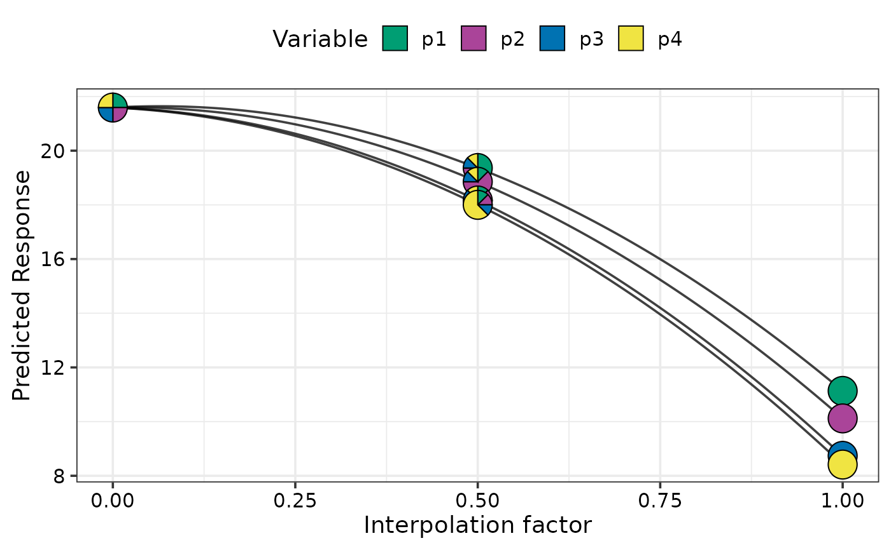
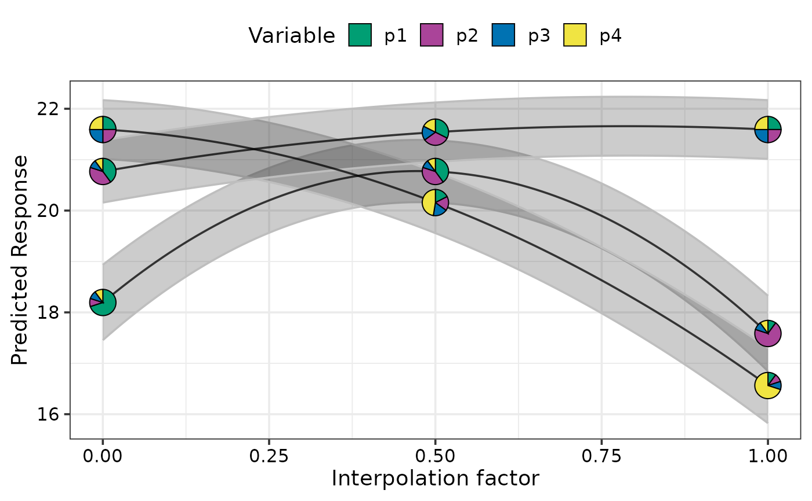

DI specific for visualising change in response across points in the simplex space
simplex_path.RdThis function will prepare the underlying data and plot the results for visualising the
change in a response variable as we move across a straight line between two points
in the simplex space in a single function call. The two sets of points specified
by the `starts` and `ends` parameters are joined by a straight line across the
simplex space and the response is predicted for the starting, ending and intermediate
communities along this line. The associated uncertainty along this prediction is also shown.
The generated plot will show individual curves indicating the variation in the
response between the points. `Pie-glyphs`
are used to highlight the compositions of the starting, ending and midpoint
of the straight line between the two points.
This is a wrapper function specifically for statistical models fit using the
DI() function from the
DImodels R package and would implicitly
call simplex_path_data followed by
simplex_path_plot. If your model object isn't fit using
DImodels, consider calling these functions manually.
Arguments
- model
A Diversity Interactions model object fit by using the `
DI()` function from the `DImodels` package.- starts
A data-frame specifying the starting proportions of the compositional variables. If a model object is specified then this data should contain all the variables present in the model object including any additional non-compositional variables. If a coefficient vector is specified then data should contain same number of columns as the number of elements in the coefficient vector and a one-to-one positional mapping would be assumed between the data columns and the elements of the coefficient vector.
- ends
A data-frame specifying the ending proportions of the compositional variables. If a model object is specified then this data should contain all the variables present in the model object including any additional non-compositional variables. If a coefficient vector is specified then data should contain same number of columns as the number of elements in the coefficient vector and a one-to-one positional mapping would be assumed between the data columns and the elements of the coefficient vector.
- add_var
A list specifying values for additional variables in the model other than the proportions (i.e. not part of the simplex design). This would be useful to compare the predictions across different values for a categorical variable. One plot will be generated for each unique combination of values specified here.
- interval
Type of interval to calculate:
- "none"
No interval to be calculated.
- "confidence" (default)
Calculate a confidence interval.
- "prediction"
Calculate a prediction interval.
- conf.level
The confidence level for calculating confidence/prediction intervals. Default is 0.95.
- se
A boolean variable indicating whether to plot confidence intervals associated with the effect of species increase or decrease
- pie_positions
A numeric vector with values between 0 and 1 (both inclusive) indicating the positions along the X-axis at which to show pie-glyphs for each curve. Default is c(0, 0.5, 1) meaning that pie-glyphs with be shown at the start, midpoint and end of each curve.
- pie_colours
A character vector indicating the colours for the slices in the pie-glyphs.
If left NULL, the colour blind friendly colours will be for the pie-glyph slices.- pie_radius
A numeric value specifying the radius (in cm) for the pie-glyphs. Default is 0.3 cm.
- FG
A higher level grouping for the compositional variables in the data. Variables belonging to the same group will be assigned with different shades of the same colour. The user can manually specify a character vector giving the group each variable belongs to. If left empty the function will try to get a grouping from the original
DImodel object.- facet_var
A character string or numeric index identifying the column in the data to be used for faceting the plot into multiple panels.
- plot
A boolean variable indicating whether to create the plot or return the prepared data instead. The default `TRUE` creates the plot while `FALSE` would return the prepared data for plotting. Could be useful for if user wants to modify the data first and then call the plotting function manually.
- nrow
Number of rows in which to arrange the final plot (when `add_var` is specified).
- ncol
Number of columns in which to arrange the final plot (when `add_var` is specified).
Value
A ggmultiplot (ggplot if single plot is returned) class object or data-frame (if `plot = FALSE`)
Examples
library(DImodels)
data(sim2)
# Fit model
mod <- DI(y = "response", prop = 3:6, DImodel = "AV", data = sim2)
#> Fitted model: Average interactions 'AV' DImodel
# Create plot
# Move from p3 monoculture to p4 monoculture
simplex_path(model = mod,
starts = data.frame(p1 = 0, p2 = 0, p3 = 1, p4 = 0),
ends = data.frame(p1 = 0, p2 = 0, p3 = 0, p4 = 1))
#> ✔ Finished data preparation.
#> ✔ Created plot.

# Move from each 70% dominant mixtures to p1 monoculture
simplex_path(model = mod,
starts = sim2[c(1, 5, 9, 13), 3:6],
ends = data.frame(p1 = 1, p2 = 0, p3 = 0, p4 = 0))
#> ✔ Finished data preparation.
#> ✔ Created plot.

# Move from centroid community to each monoculture
simplex_path(model = mod,
starts = sim2[c(18),],
ends = sim2[c(48, 52, 56, 60), ])
#> ✔ Finished data preparation.
#> ✔ Created plot.

# Show change across multiple points simultaneously and show confidence bands
# using `se = TRUE`
simplex_path(model = mod,
starts = sim2[c(1, 17, 22), ],
ends = sim2[c(5, 14, 17), ], se = TRUE)
#> ✔ Finished data preparation.
#> ✔ Created plot.

# Change pie_colours using `pie_colours` and show pie-glyph at different
# points along the curve using `pie_positions`
simplex_path(model = mod,
starts = sim2[c(1, 17, 22), ],
ends = sim2[c(5, 14, 17), ], se = TRUE,
pie_positions = c(0, 0.25, 0.5, 0.75, 1),
pie_colours = c("steelblue1", "steelblue4", "orange1", "orange4"))
#> ✔ Finished data preparation.
#> ✔ Created plot.
# Facet based on existing variables
# \donttest{
simplex_path(model = mod,
starts = sim2[c(1, 17, 22), ],
ends = sim2[c(5, 14, 17), ], se = TRUE, facet_var = "block",
pie_colours = c("steelblue1", "steelblue4", "orange1", "orange4"))
#> ✔ Finished data preparation.
#> ✔ Created plot.
 # Add additional variables and create a separate plot for each
simplex_path(model = mod,
starts = sim2[c(1, 17, 22), 3:6],
ends = sim2[c(5, 14, 17), 3:6], se = TRUE,
pie_colours = c("steelblue1", "steelblue4", "orange1", "orange4"),
add_var = list("block" = factor(c(1, 3),
levels = c(1, 2, 3, 4))))
#> ✔ Finished data preparation.
#> ✔ Created all plots.
# Add additional variables and create a separate plot for each
simplex_path(model = mod,
starts = sim2[c(1, 17, 22), 3:6],
ends = sim2[c(5, 14, 17), 3:6], se = TRUE,
pie_colours = c("steelblue1", "steelblue4", "orange1", "orange4"),
add_var = list("block" = factor(c(1, 3),
levels = c(1, 2, 3, 4))))
#> ✔ Finished data preparation.
#> ✔ Created all plots.
 # }
## Specify `plot = FALSE` to not create the plot but return the prepared data
head(simplex_path(model = mod, plot = FALSE,
starts = sim2[c(1, 17, 22), 3:6],
ends = sim2[c(5, 14, 17), 3:6], se = TRUE,
pie_colours = c("steelblue1", "steelblue4",
"orange1", "orange4"),
add_var = list("block" = factor(c(1, 3),
levels = c(1, 2, 3, 4)))))
#> ✔ Finished data preparation.
#> p1 p2 p3 p4 .InterpConst .Group block .add_str_ID .Pred .Lower
#> 1 0.700 0.100 0.1 0.1 0.00 1 1 block: 1 18.19429 17.45473
#> 2 0.694 0.106 0.1 0.1 0.01 1 1 block: 1 18.30217 17.56890
#> 3 0.688 0.112 0.1 0.1 0.02 1 1 block: 1 18.40775 17.68057
#> 4 0.682 0.118 0.1 0.1 0.03 1 1 block: 1 18.51103 17.78973
#> 5 0.676 0.124 0.1 0.1 0.04 1 1 block: 1 18.61200 17.89639
#> 6 0.670 0.130 0.1 0.1 0.05 1 1 block: 1 18.71068 18.00055
#> .Upper
#> 1 18.93385
#> 2 19.03544
#> 3 19.13494
#> 4 19.23233
#> 5 19.32762
#> 6 19.42080
# }
## Specify `plot = FALSE` to not create the plot but return the prepared data
head(simplex_path(model = mod, plot = FALSE,
starts = sim2[c(1, 17, 22), 3:6],
ends = sim2[c(5, 14, 17), 3:6], se = TRUE,
pie_colours = c("steelblue1", "steelblue4",
"orange1", "orange4"),
add_var = list("block" = factor(c(1, 3),
levels = c(1, 2, 3, 4)))))
#> ✔ Finished data preparation.
#> p1 p2 p3 p4 .InterpConst .Group block .add_str_ID .Pred .Lower
#> 1 0.700 0.100 0.1 0.1 0.00 1 1 block: 1 18.19429 17.45473
#> 2 0.694 0.106 0.1 0.1 0.01 1 1 block: 1 18.30217 17.56890
#> 3 0.688 0.112 0.1 0.1 0.02 1 1 block: 1 18.40775 17.68057
#> 4 0.682 0.118 0.1 0.1 0.03 1 1 block: 1 18.51103 17.78973
#> 5 0.676 0.124 0.1 0.1 0.04 1 1 block: 1 18.61200 17.89639
#> 6 0.670 0.130 0.1 0.1 0.05 1 1 block: 1 18.71068 18.00055
#> .Upper
#> 1 18.93385
#> 2 19.03544
#> 3 19.13494
#> 4 19.23233
#> 5 19.32762
#> 6 19.42080